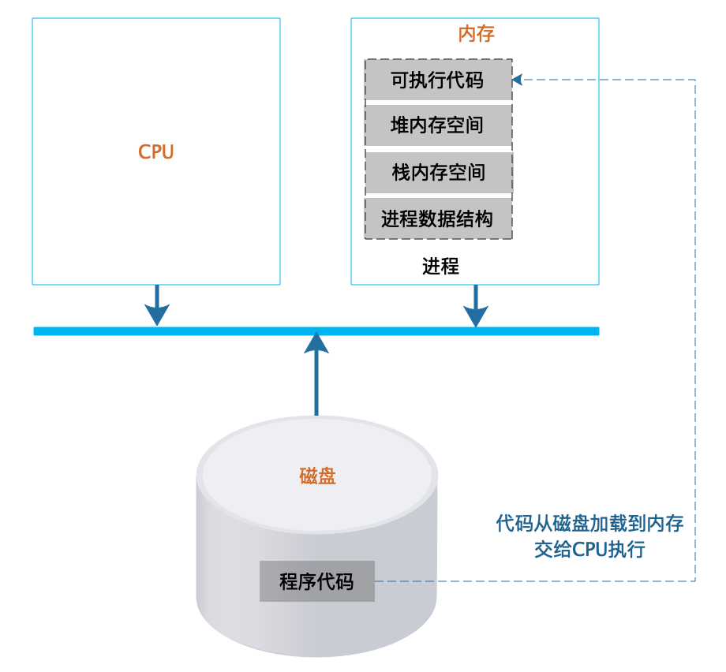
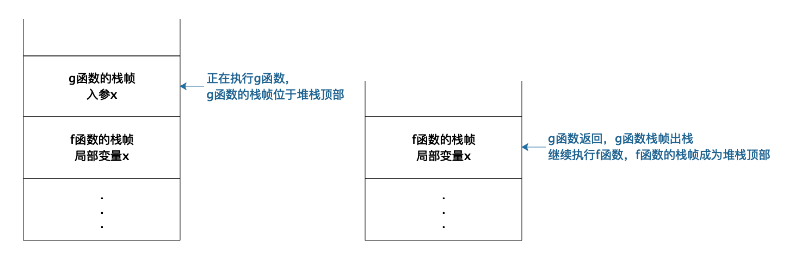
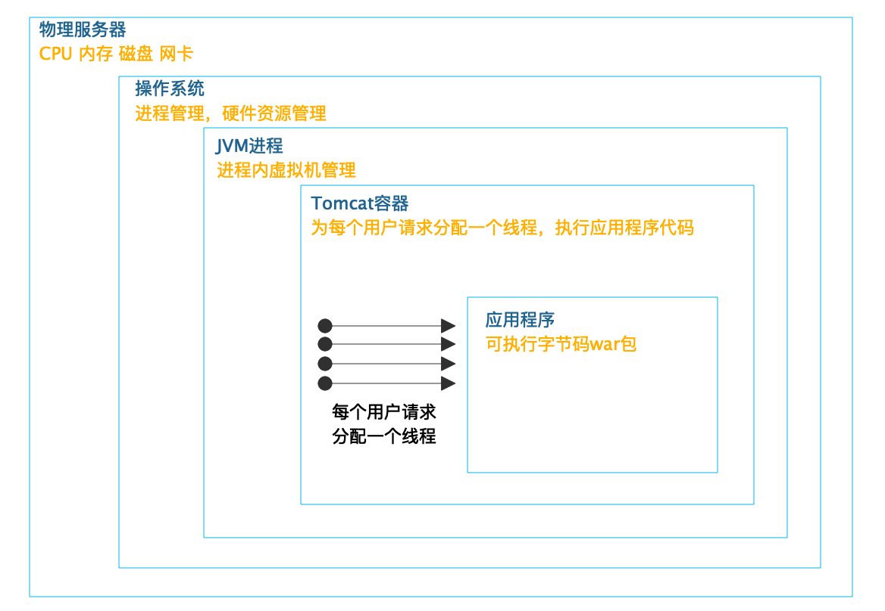

- 00 开篇词 掌握软件开发技术的第一性原理.md.html
- 01 程序运行原理：程序是如何运行又是如何崩溃的？.md.html
- 02 数据结构原理：Hash表的时间复杂度为什么是O(1)？.md.html
- 03 Java虚拟机原理：JVM为什么被称为机器（machine）？.md.html
- 04 网络编程原理：一个字符的互联网之旅.md.html
- 05 文件系统原理：如何用1分钟遍历一个100TB的文件？.md.html
- 06 数据库原理：为什么PrepareStatement性能更好更安全？.md.html
- 07 答疑 Java Web程序的运行时环境到底是怎样的？.md.html
- 07 编程语言原理：面向对象编程是编程的终极形态吗？.md.html
- 08 软件设计的方法论：软件为什么要建模？.md.html
- 09 软件设计实践：如何使用UML完成一个设计文档？.md.html
- 10 软件设计的目的：糟糕的程序员比优秀的程序员差在哪里？.md.html
- 11 软件设计的开闭原则：如何不修改代码却能实现需求变更？.md.html
- 12 软件设计的依赖倒置原则：如何不依赖代码却可以复用它的功能？.md.html
- 13 软件设计的里氏替换原则：正方形可以继承长方形吗？.md.html
- 14 软件设计的单一职责原则：为什么说一个类文件打开最好不要超过一屏？.md.html
- 15 软件设计的接口隔离原则：如何对类的调用者隐藏类的公有方法？.md.html
- 16 设计模式基础：不会灵活应用设计模式，你就没有掌握面向对象编程.md.html
- 17 设计模式应用：编程框架中的设计模式.md.html
- 18 反应式编程框架设计：如何使程序调用不阻塞等待，立即响应？.md.html
- 19 组件设计原则：组件的边界在哪里？.md.html
- 20 答疑 对于设计模式而言，场景到底有多重要？.md.html
- 20 领域驱动设计：35岁的程序员应该写什么样的代码？.md.html
- 21 分布式架构：如何应对高并发的用户请求.md.html
- 22 缓存架构：如何减少不必要的计算？.md.html
- 23 异步架构：如何避免互相依赖的系统间耦合？.md.html
- 24 负载均衡架构：如何用10行代码实现一个负载均衡服务？.md.html
- 25 数据存储架构：如何改善系统的数据存储能力？.md.html
- 26 搜索引擎架构：如何瞬间完成海量数据检索？.md.html
- 27 微服务架构：微服务究竟是灵丹还是毒药？.md.html
- 28 高性能架构：除了代码，你还可以在哪些地方优化性能？.md.html
- 29 高可用架构：我们为什么感觉不到淘宝应用升级时的停机？.md.html
- 30 安全性架构：为什么说用户密码泄漏是程序员的锅？.md.html
- 31 大数据架构：大数据技术架构的思想和原理是什么？.md.html
- 32 AI与物联网架构：从智能引擎到物联网平台.md.html
- 33 区块链技术架构：区块链到底能做什么？.md.html
- 33 答疑 互联网需要解决的技术问题是什么？.md.html
- 34 技术修炼之道：同样工作十几年，为什么有的人成为大厂架构师，有的人失业？.md.html
- 35 技术进阶之道：你和这个星球最顶级的程序员差几个等级？.md.html
- 36 技术落地之道：你真的知道自己要解决的问题是什么吗？.md.html
- 37 技术沟通之道：如何解决问题？.md.html
- 38 技术管理之道：你真的要转管理吗？.md.html
- 38 答疑 工作中的交往和沟通，都有哪些小技巧呢？.md.html
- 加餐 软件设计文档示例模板.md.html
- 结束语 期待未来的你，成为优秀的软件架构师.md.html
- 捐赠
01 程序运行原理：程序是如何运行又是如何崩溃的？
软件的核心载体是程序代码，软件开发的主要工作产出也是代码，但是代码被存储在磁盘上本身没有任何价值，软件要想实现价值，代码就必须运行起来。那么代码是如何运行的？在运行中可能会出现什么问题呢？
程序是如何运行起来的
软件被开发出来，是文本格式的代码，这些代码通常不能直接运行，需要使用编译器编译成操作系统或者虚拟机可以运行的代码，即可执行代码，它们都被存储在文件系统中。不管是文本格式的代码还是可执行的代码，都被称为程序，程序是静态的，安静地呆在磁盘上，什么也干不了。要想让程序处理数据，完成计算任务，必须把程序从外部设备加载到内存中，并在操作系统的管理调度下交给CPU去执行，去运行起来，才能真正发挥软件的作用，程序运行起来以后，被称作进程。
进程除了包含可执行的程序代码，还包括进程在运行期使用的内存堆空间、栈空间、供操作系统管理用的数据结构。如下图所示：
 操作系统把可执行代码加载到内存中，生成相应的数据结构和内存空间后，就从可执行代码的起始位置读取指令交给CPU顺序执行。指令执行过程中，可能会遇到一条跳转指令，即CPU要执行的下一条指令不是内存中可执行代码顺序的下一条指令。编程中使用的循环for…，while…和if…else…最后都被编译成跳转指令。
程序运行时如果需要创建数组等数据结构，操作系统就会在进程的堆空间申请一块相应的内存空间，并把这块内存的首地址信息记录在进程的栈中。堆是一块无序的内存空间，任何时候进程需要申请内存，都会从堆空间中分配，分配到的内存地址则记录在栈中。
栈是严格的一个后进先出的数据结构，同样由操作系统维护，主要用来记录函数内部的局部变量、堆空间分配的内存空间地址等。
我们以如下代码示例，描述函数调用过程中，栈的操作过程：
void f(){
int x = g(1);
x++; //g函数返回，当前堆栈顶部为f函数栈帧，在当前栈帧继续执行f函数的代码。
}
int g(int x){
return x + 1;
}
每次函数调用，操作系统都会在栈中创建一个栈帧（stack frame）。正在执行的函数参数、局部变量、申请的内存地址等都在当前栈帧中，也就是堆栈的顶部栈帧中。如下图所示：
 当f函数执行的时候，f函数就在栈顶，栈帧中存储着f函数的局部变量，输入参数等等。当f函数调用g函数，当前执行函数就变成g函数，操作系统会为g函数创建一个栈帧并放置在栈顶。当函数g()调用结束，程序返回f函数，g函数对应的栈帧出栈，顶部栈帧变又为f函数，继续执行f函数的代码，也就是说，真正执行的函数永远都在栈顶。而且因为栈帧是隔离的，所以不同函数可以定义相同的变量而不会发生混乱。
一台计算机如何同时处理数以百计的任务
我们自己日常使用的PC计算机通常只是一核或者两核的CPU，我们部署应用程序的服务器虽然有更多的CPU核心，通常也不过几核或者几十核。但是我们的PC计算机可以同时编程、听音乐，而且还能执行下载任务，而服务器则可以同时处理数以百计甚至数以千计的并发用户请求。
那么为什么一台计算机服务器可以同时处理数以百计，以千计的计算任务呢？这里主要依靠的是操作系统的CPU分时共享技术。如果同时有很多个进程在执行，操作系统会将CPU的执行时间分成很多份，进程按照某种策略轮流在CPU上运行。由于现代CPU的计算能力非常强大，虽然每个进程都只被执行了很短一个时间，但是在外部看来却好像是所有的进程都在同时执行，每个进程似乎都独占一个CPU执行。
所以虽然从外部看起来，多个进程在同时运行，但是在实际物理上，进程并不总是在CPU上运行的，一方面进程共享CPU，所以需要等待CPU运行，另一方面，进程在执行I/O操作的时候，也不需要CPU运行。进程在生命周期中，主要有三种状态，运行、就绪、阻塞。
- 运行：当一个进程在CPU上运行时，则称该进程处于运行状态。处于运行状态的进程的数目小于等于CPU的数目。
- 就绪：当一个进程获得了除CPU以外的一切所需资源，只要得到CPU即可运行，则称此进程处于就绪状态，就绪状态有时候也被称为等待运行状态。
- 阻塞：也称为等待或睡眠状态，当一个进程正在等待某一事件发生（例如等待I/O完成，等待锁……）而暂时停止运行，这时即使把CPU分配给进程也无法运行，故称该进程处于阻塞状态。
不同进程轮流在CPU上执行，每次都要进行进程间CPU切换，代价是非常大的，实际上，每个用户请求对应的不是一个进程，而是一个线程。线程可以理解为轻量级的进程，在进程内创建，拥有自己的线程栈，在CPU上进行线程切换的代价也更小。线程在运行时，和进程一样，也有三种主要状态，从逻辑上看，进程的主要概念都可以套用到线程上。我们在进行服务器应用开发的时候，通常都是多线程开发，理解线程对我们设计、开发软件更有价值。
系统为什么会变慢，为什么会崩溃
现在的服务器软件系统主要使用多线程技术实现多任务处理，完成对很多用户的并发请求处理。也就是我们开发的应用程序通常以一个进程的方式在操作系统中启动，然后在进程中创建很多线程，每个线程处理一个用户请求。
以Java的web开发为例，似乎我们编程的时候通常并不需要自己创建和启动线程，那么我们的程序是如何被多线程并发执行，同时处理多个用户请求的呢？实际中，启动多线程，为每个用户请求分配一个处理线程的工作是在web容器中完成的，比如常用的Tomcat容器。
如下图所示：
 Tomcat启动多个线程，为每个用户请求分配一个线程，调用和请求URL路径相对应的Servlet（或者Controller）代码，完成用户请求处理。而Tomcat则在JVM虚拟机进程中，JVM虚拟机则被操作系统当做一个独立进程管理。真正完成最终计算的，是CPU、内存等服务器硬件，操作系统将这些硬件进行分时（CPU）、分片（内存）管理，虚拟化成一个独享资源让JVM进程在其上运行。
以上就是一个Java web应用运行时的主要架构，有时也被称作架构过程视图。需要注意的是，这里有个很多web开发者容易忽略的事情，那就是不管你是否有意识，你开发的web程序都是被多线程执行的，web开发天然就是多线程开发。
CPU以线程为单位进行分时共享执行，可以想象代码被加载到内存空间后，有多个线程在这些代码上执行，这些线程从逻辑上看，是同时在运行的，每个线程有自己的线程栈，所有的线程栈都是完全隔离的，也就是每个方法的参数和方法内的局部变量都是隔离的，一个线程无法访问到其他线程的栈内数据。
但是当某些代码修改内存堆里的数据的时候，如果有多个线程在同时执行，就可能会出现同时修改数据的情况，比如，两个线程同时对一个堆中的数据执行+1操作，最终这个数据只会被加一次，这就是人们常说的线程安全问题，实际上线程的结果应该是依次加一，即最终的结果应该是+2。
多个线程访问共享资源的这段代码被称为临界区，解决线程安全问题的主要方法是使用锁，将临界区的代码加锁，只有获得锁的线程才能执行临界区代码，如下：
lock.lock(); //线程获得锁
i++; //临界区代码，i位于堆中
lock.unlock(); //线程释放锁
如果当前线程执行到第一行，获得锁的代码的时候，锁已经被其他线程获取并没有释放，那么这个线程就会进入阻塞状态，等待前面释放锁的线程将自己唤醒重新获得锁。
锁会引起线程阻塞，如果有很多线程同时在运行，那么就会出现线程排队等待锁的情况，线程无法并行执行，系统响应速度就会变慢。此外I/O操作也会引起阻塞，对数据库连接的获取也可能会引起阻塞。目前典型的web应用都是基于RDBMS关系数据库的，web应用要想访问数据库，必须获得数据库连接，而受数据库资源限制，每个web应用能建立的数据库的连接是有限的，如果并发线程数超过了连接数，那么就会有部分线程无法获得连接而进入阻塞，等待其他线程释放连接后才能访问数据库，并发的线程数越多，等待连接的时间也越多，从web请求者角度看，响应时间变长，系统变慢。
被阻塞的线程越多，占据的系统资源也越多，这些被阻塞的线程既不能继续执行，也不能释放当前已经占据的资源，在系统中一边等待一边消耗资源，如果阻塞的线程数超过了某个系统资源的极限，就会导致系统宕机，应用崩溃。
解决系统因高并发而导致的响应变慢、应用崩溃的主要手段是使用分布式系统架构，用更多的服务器构成一个集群，以便共同处理用户的并发请求，保证每台服务器的并发负载不会太高。此外必要时还需要在请求入口处进行限流，减小系统的并发请求数；在应用内进行业务降级，减小线程的资源消耗。高并发系统架构方案将在专栏的第三模块中进一步探讨。
小结
事实上，现代CPU和操作系统的设计远比这篇文章讲的要复杂得多，但是基础原理大致就是如此。为了让程序能很好地被执行，软件开发的时候要考虑很多情况，为了让软件能更好地发挥效能，需要在部署上进行规划和架构。软件是如何运行的，应该是软件工程师和架构师的常识，在设计开发软件的时候，应该时刻以常识去审视自己的工作，保证软件开发在正确的方向上前进。
思考题
线程安全的临界区需要依靠锁，而锁的获取必须也要保证自己是线程安全的，也就是说，不能出现两个线程同时得到锁的情况，那么锁是如何保证自己是线程安全的呢？或者说，在操作系统以及CPU层面，锁是如何实现的？
你不妨思考一下这个问题，把你的思考写在下面的评论区里，我会和你一起交流。也欢迎你把这篇文章分享给你的朋友或者同事，一起交流一下。
© 2019 - 2023 Liangliang Lee. Powered by gin and hexo-theme-book.